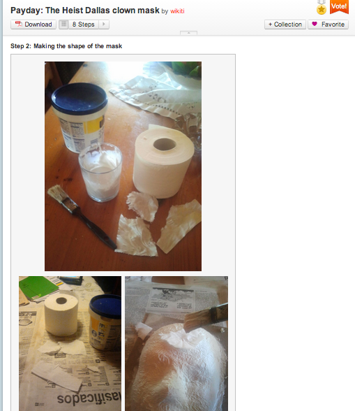

As we discussed earlier, we’ll be thinking about assessment on the web for the next few weeks. This week, we’ll look at our priorities for assessment, and walk through some examples of how these ideas work in action.
As learning on the web has evolved and “grown up”, a few innovative trends have emerged. Certain principles tap all the connectedness that the web has to offer. Of the learning communities we consider successful and that we admire, several share the following principles:
As part of the open & online education community, we’ve come across scores of platforms and learning networks. A few of the ones we admire put in place several of the assessment principles we outlined above.
Scratch, the playful programming environment out of the Lifelong Kindgergarden Group at the MIT Media Lab, hosts a vibrant online learning community for its “Scratchers.” To onboard new community members, the front page models what the community determines to be of quality--the ”Featured Projects” area shines a light on exemplary projects. To draw a path for new learners through the community, users pass through the phases of “New Scratcher” “Scratcher” and “Community Moderator.” There’s even a whole group in the forums to support new Scratch members.
These labels are useful: the community understands that New Scratchers need more support and feedback to get off the ground. Then as learners acclimate to the culture, they are recognized as experts and become “Scratchers.” Each label does its part to support a sense of belonging amongst community members. Additionally, Scratch offers multiple ways to develop strong social ties with other Scratchers by enabling sub-communities to form around any interest. This strengthens the feeling that Scratch can be a home for the learner, and a place where she can find others with similar passions. Scratcher online profiles create a portfolio-type effect that allow you to observe the set of a learner's projects, but also projects of other Scratchers they liked, and active curation of projects in the community. Scratchers also frequently reflect on their own work, and the strategies they followed to implement certain features, in the project descriptions they leave for others.
Instructables is another popular learning community where members showcase their DIY projects. The learner profiles showcase the diversity of projects learners have worked on, forming a kind of portfolio that evolves over time. Like other communities on the web, instructables has forums, a question-and-answer mechanism, and groups that have formed around certain interests. Unlike other learning communities, the learner profiles reflect their individual participation in each area, recognizing their expertise and engagement in the community.
Another unique aspect about instructables is that the platform asks you to step out your creation so that others can replicate it. If you post a claymation Halloween mask, the platform asks you to walk through carving the mold, adding a mustache and glueing the googly-eyes.

Not only does this platform recognize different paths to the answer--you could probably find 20 different posts on making Halloween masks--the very act of walking through what you’ve made and explaining it to someone else is a type of self-assessment.
While our assessment experiences touch on each of these principles, there are several nuts we have yet to crack. One outstanding question is how to approach expertise in an online community. We’re a bit uncomfortable with the term “Expert,” since it implies hierarchy, but sometimes it is crucial to get feedback from someone who has a lot of expertise. How do we treat those with more experience in an egalitarian way? And how to do make sure that we scale access to expertise - having the world’s foremost expert answer emails from every new member of a community simply doesn’t scale.
Assessment needs to be radically rethought, but it’s difficult to experiment when the stakes are high. Informal learning groups have the freedom to experiment--we can tinker, innovate and try out new ideas. However, there’s a disconnect between what is happening in informal learning spaces and how that is recognized in the traditional system of certification and accreditation. “Badges for Lifelong Learning” has attempted to bridge the gap between informal learning and legitimate recognition, but perhaps they are only one step in this direction. How can we make alternative assessment “count”?